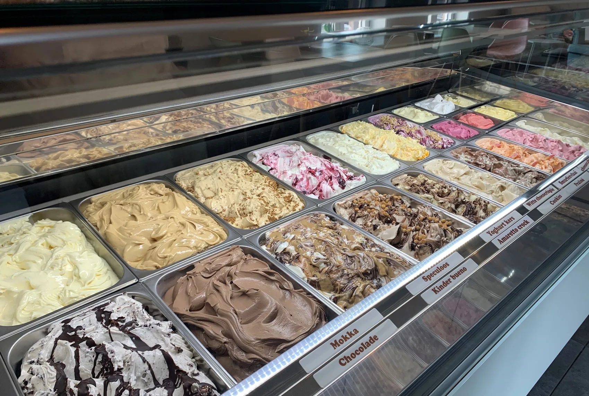
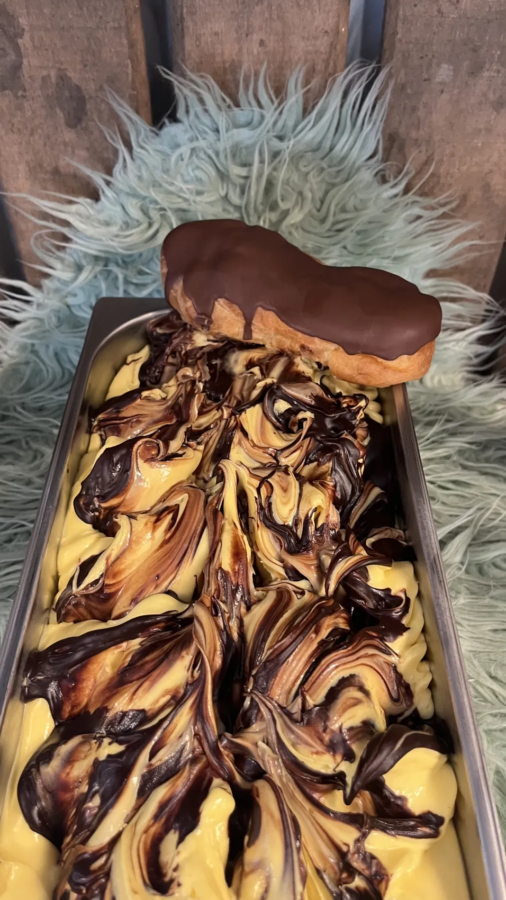
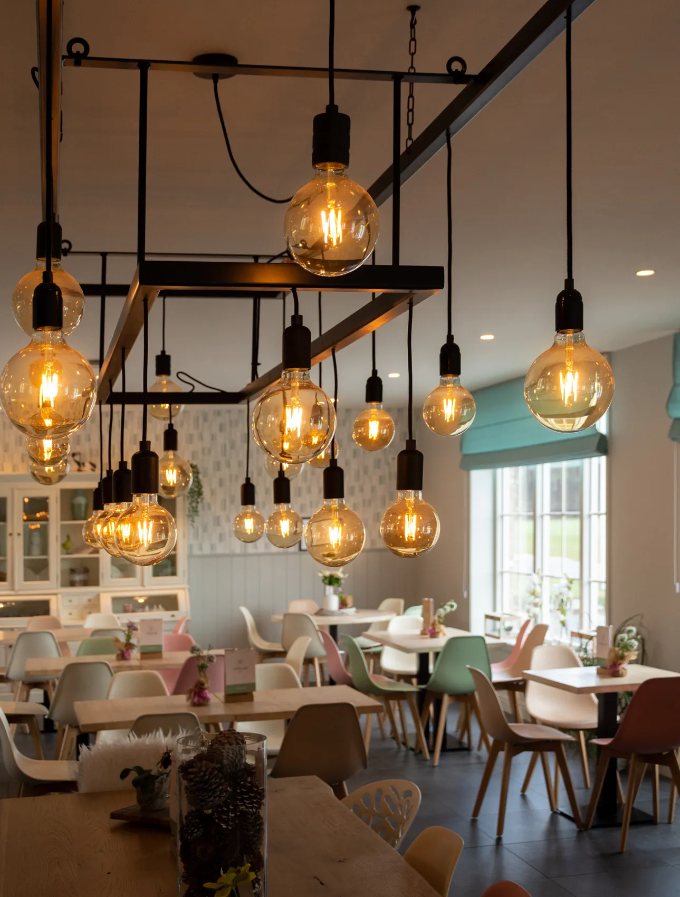
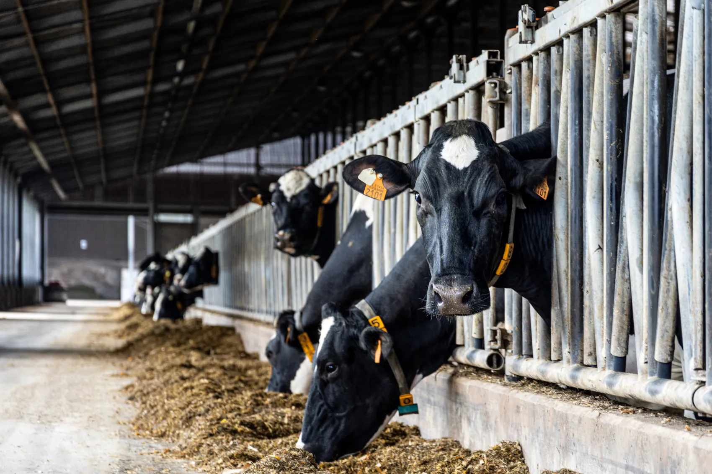
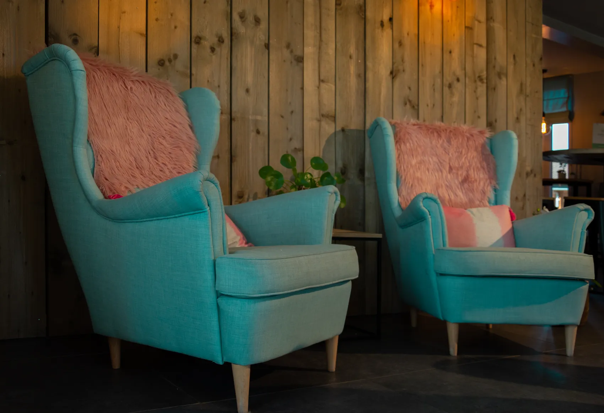
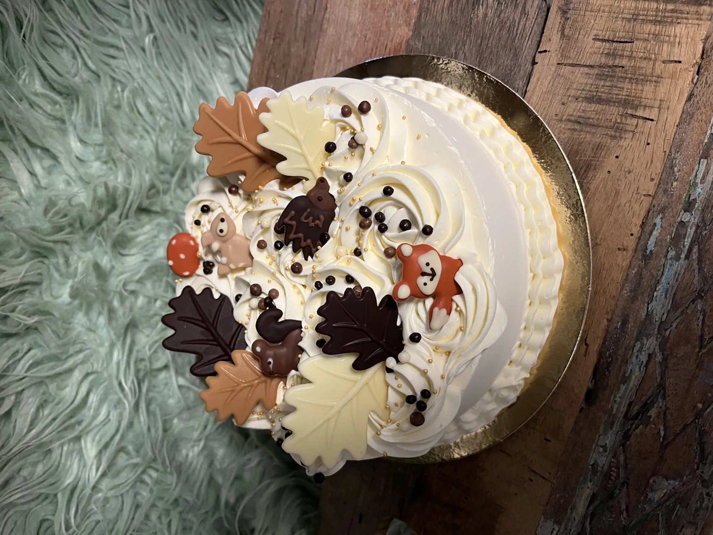
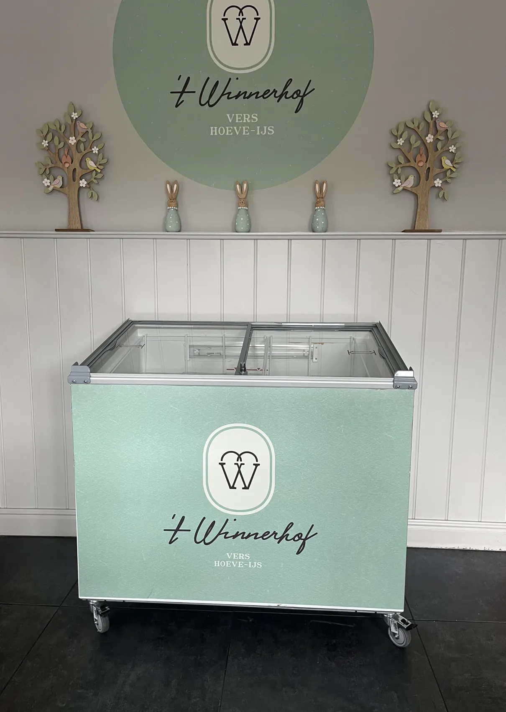

Vers gedraaid, op de warme manier
We pasteuriseren onze verse hoevemelk samen met de grondstoffen. Daarna rijpt de mix en komen de smaken erbij.
Altijd in de toog
Elke week komt er een andere smaak bij. Thuis eten? Haal een doos van een halve of een hele liter, en zet ze tien minuten op het aanrecht voor je schept.


Een namiddag op de boerderij
Chocomelk, koffie, Limburgs gebak en huisbereide warme wafels. In de winter komt er boerenkost bij.

zitplaatsen binnen, en een ruim terras dat deels verwarmd is voor de koelere avonden.


Kinderen spelen in de grote zandbak en zien van daaruit hoe de koeien gemolken worden.
IJstaarten en een eigen ijstoog
Voor een verjaardag, communie, trouw of babyborrel maken we de ijstaart die past. Of je huurt een van onze ijstoogjes, gevuld met ons ijs.
Een ijstaart bestel je minstens een week op voorhand. Voor de feestdagen: kerst tot 17 december, nieuwjaar tot 26 december.


Kom gerust langs
za en zo 12u tot 19u30
ma, di en do gesloten
dinsdag gesloten
dinsdag gesloten
Winnerstraat 88, 3941 Eksel
011 96 65 58 · hello@winnerhof.be